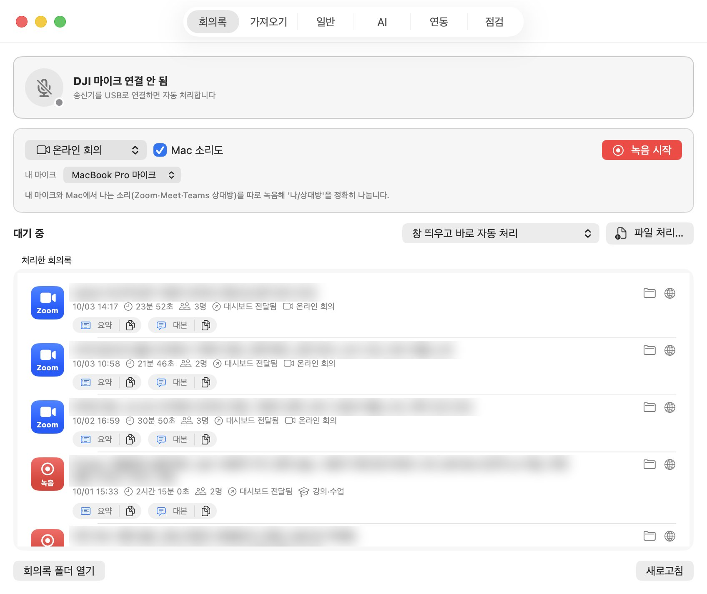
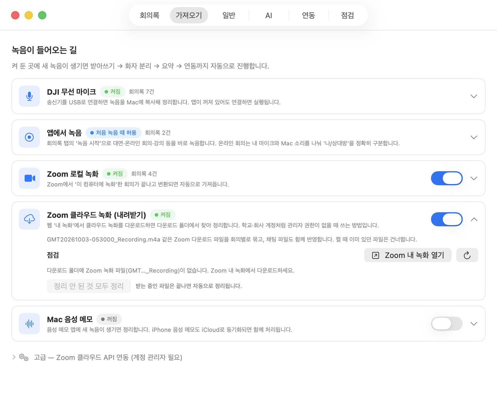
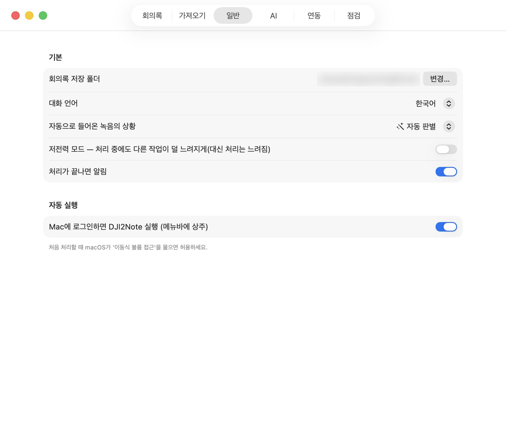
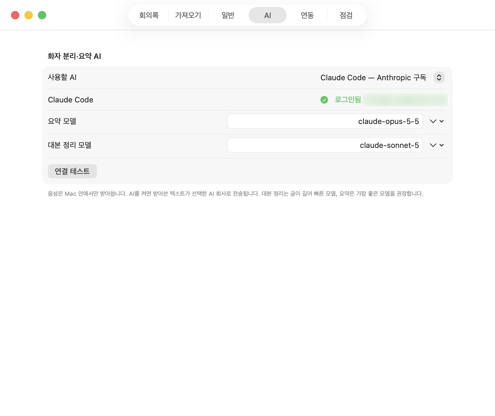
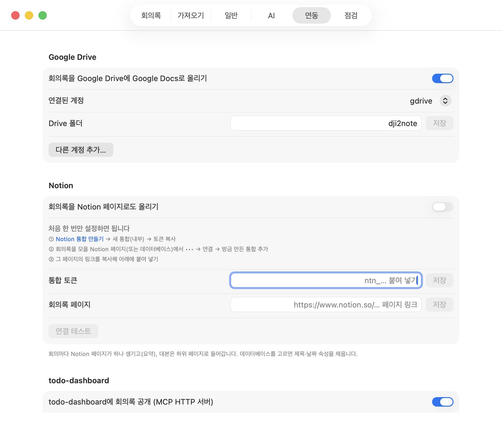
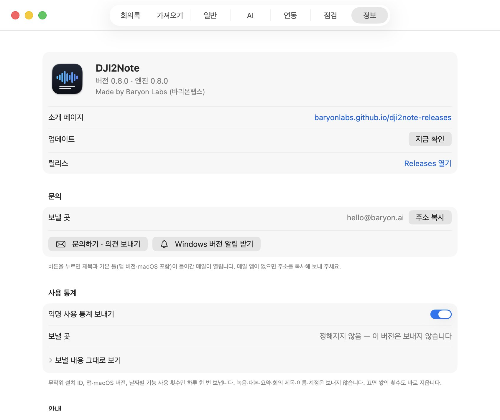
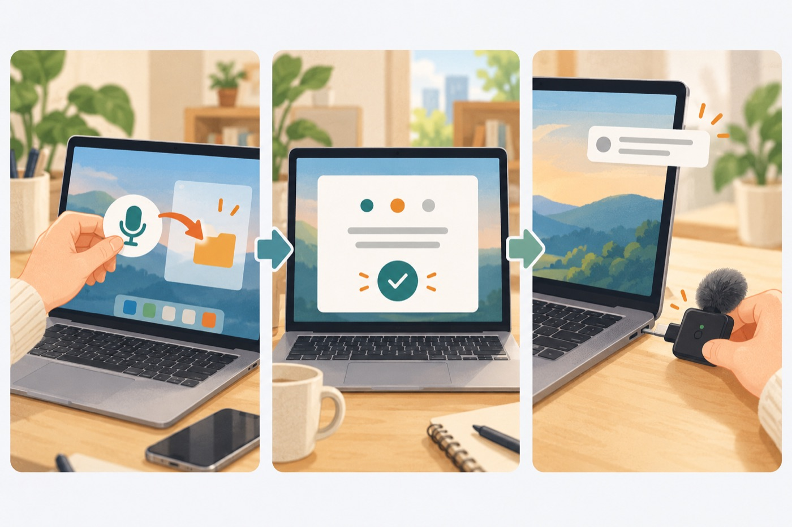
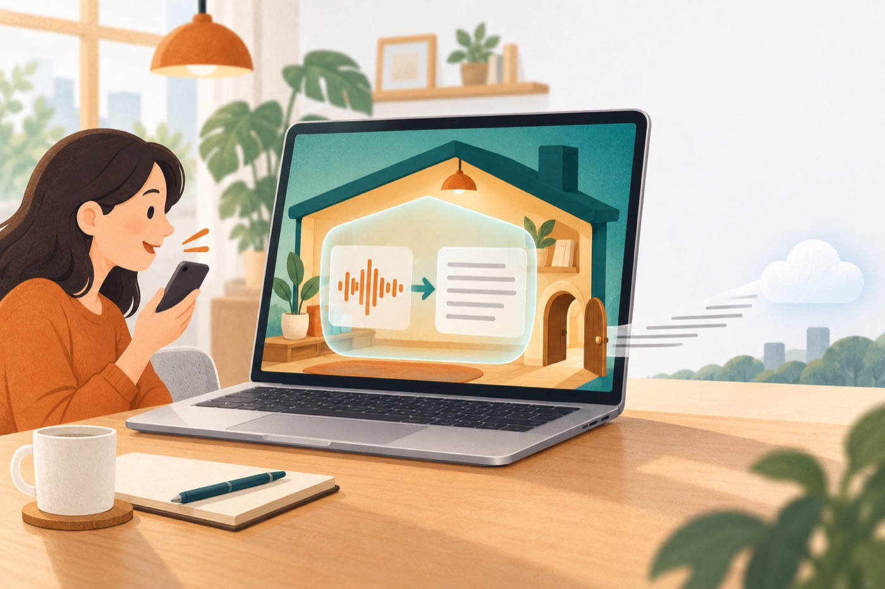

DJI 무선 마이크, Zoom, Mac 녹음을 내 Mac·PC에서 받아쓰고, 누가 말했는지 나눈 뒤 상황에 맞는 요약을 만들어 Google Drive·Notion에 올려 둡니다.
경고 없이 한 번에 설치하려면 터미널에 붙여 넣기:
curl -fsSL https://raw.githubusercontent.com/baryonlabs/dji2note-releases/main/install-app.sh | bash
xattr -dr com.apple.quarantine "/Applications/Baryon/DJI2Note.app"
경고 없이 한 번에 설치하려면 PowerShell에 붙여 넣기:
irm https://baryonlabs.github.io/dji2note-releases/install.ps1 | iex
송신기를 USB로 꽂으면 앱이 깨어나 새 녹음을 먼저 복사해 두고 처리합니다. 마이크를 바로 빼도 괜찮아요. 30분 단위로 나뉜 녹음은 한 회의로 이어 붙입니다.
내장·USB·iPhone 마이크나 DJI 수신기로 녹음합니다. 온라인 회의는 내 목소리와 Mac 소리를 따로 담아 '나/상대방'을 정확히 나눠요.
내 Mac에 저장된 Zoom 녹화와 Zoom 클라우드 녹화를 가져옵니다. 참가자별 음성이 있으면 이름으로 화자를 나눕니다.
iPhone 음성 메모가 iCloud로 Mac에 들어오면 그것도 회의록으로 만들어요.
쌓인 녹음을 손대지 않고 전부 처리합니다. 진행 상황과 CPU 사용량은 메뉴바에서 보여요.
mlx-whisper로 Mac 안에서 받아씁니다. 소리 없는 구간에서 생기는 엉뚱한 문장은 걸러 냅니다.
기본은 자동 판별. 목록에서 상황을 바꾸면 그 형식으로 다시 요약합니다.
| 대면 회의 · 온라인 회의 | 결정 사항, 할 일(담당·기한) |
|---|---|
| 강의·수업 | 핵심 개념, 용어, 예시·실습, 질의응답, 과제 |
| 인터뷰·면접 | 대상자 정보, 질문과 답, 평가 포인트, 처우 논의 |
| 상담·고객 미팅 | 요구·문제, 제안, 합의, 후속 조치 |
| 브레인스토밍 | 아이디어 묶음, 유망안, 리스크, 다음 실험 |
| 발표·세미나 | 핵심 메시지, 인상적인 말, 질의응답 |
| 통화 · 개인 메모 | 요점·약속 / 생각 정리 |

DJI 연결 상태, 바로 녹음, 처리한 회의록 목록이 한 화면에 있어요.
실제 화면입니다. 회의 내용·계정 정보는 흐리게 가렸어요.

녹음이 들어오는 길을 켜고 끕니다. 켜 둔 곳에 새 녹음이 생기면 끝까지 자동으로 진행해요.
실제 화면입니다. 회의 내용·계정 정보는 흐리게 가렸어요.

저장 위치와 언어, 자동 판별, 알림, 로그인 시 실행을 정합니다.
실제 화면입니다. 회의 내용·계정 정보는 흐리게 가렸어요.

화자 분리·요약에 쓸 AI를 고릅니다. 음성은 Mac 안에서 받아쓰고, 글자만 고른 AI로 보내요.
실제 화면입니다. 회의 내용·계정 정보는 흐리게 가렸어요.

회의록을 둘 곳을 연결합니다.
실제 화면입니다. 회의 내용·계정 정보는 흐리게 가렸어요.

버전·업데이트, 소개 페이지, 문의, 사용 통계, 안내 문서를 앱 안에서 바로 봅니다.
메뉴바 아이콘의 사용법에서도 열 수 있어요.

터미널에 붙여 넣으면 응용 프로그램 → Baryon 폴더에 설치하고 바로 엽니다. 경고 창도 뜨지 않아요.
curl -fsSL https://raw.githubusercontent.com/baryonlabs/dji2note-releases/main/install-app.sh | bash
엔진 설치 → 요약 AI 고르기(Claude 로그인, Codex, API 키, Baryon AI) → Google 계정 연결. 관리자 암호나 Homebrew는 필요 없습니다.
DJI를 연결하거나 앱에서 녹음을 시작하세요. 끝나면 Mac 알림으로 알려 드리고, 회의록 목록에서 요약과 대본을 바로 보거나 복사할 수 있어요.
DMG로 받았다면 처음 열 때 "확인할 수 없음" 경고가 뜰 수 있어요. 시스템 설정 → 개인정보 보호 및 보안 → 맨 아래 그래도 열기를 한 번 누르면 됩니다.
요약과 화자 분리 대본을 Google Docs로 올립니다. 여러 계정을 연결해 골라 쓸 수 있어요.
회의마다 요약 페이지를 만들고 대본은 하위 페이지로 넣습니다. 데이터베이스를 고르면 제목·날짜도 채워요.
정리된 요약과 맥락을 MCP 서버로 공개해, 업무 대시보드나 봇이 정기적으로 가져가 할 일로 정리할 수 있어요.

받아쓰기는 Mac 안에서 합니다. 요약을 위해 대본 글자만 내가 고른 AI(Claude, OpenAI, Gemini 등)로 보내고, 올리기는 내가 연결한 Drive·Notion에만 합니다. Baryon Labs에는 기능별 사용 횟수 같은 익명 통계만 가고, 정보 탭에서 끌 수 있어요. 녹음 전에 함께 대화하는 분의 동의를 받아 주세요.
앱의 정보 → 문의하기를 누르면 앱 버전이 들어간 메일 틀이 열려요. 앱이 없다면 아래로 바로 보내셔도 돼요.
앱의 정보 탭에도 같은 문서가 들어 있어요.